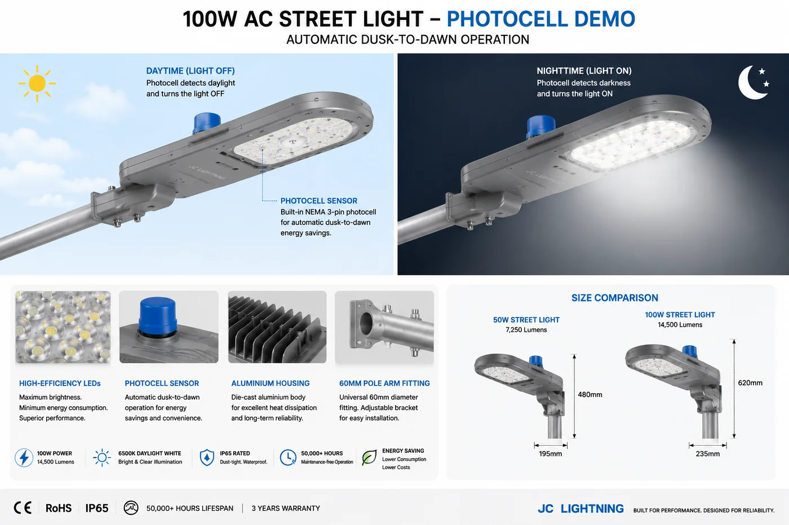

AC Street Light (50–100W)
A mains-powered street light head for municipal roads, industrial parks and parking lots — 50/100W, IP65, 6500K, in an aluminium housing that fits 60mm pole arms and is photocell-ready.

For roads and parks that already have grid power, this mains street-light head is the efficient LED upgrade. It fits standard 60mm pole arms, accepts a photocell for automatic dusk-to-dawn operation, and seals to IP65 for year-round service. Two wattages (50/100W) suit side streets to main roads. It pairs naturally with our all-in-one and split solar street lights so a distributor can quote both grid and off-grid road projects.
Specifications
| Power options | 50 / 100W |
|---|---|
| Power source | AC mains |
| IP rating | IP65 |
| Colour temperature | 6500K daylight |
| Pole fit | 60mm arms |
| Control | Photocell ready |
| Housing | Aluminium |
| Certification | CE + RoHS |
Why buyers choose it
Standard fit. 60mm arm mounting and photocell-ready wiring make retrofits straightforward.
Efficient LED. A clean upgrade from legacy sodium street lights on grid-connected roads.
Pairs with solar street lights. Quote grid and off-grid road projects from one supplier.
Certified & OEM-ready. CE + RoHS with every quotation; wattage and branding customisable.